Java
Lowatem, Pong
Processing, NetBeans
Pong
Projet
Réalisation d’un jeu pong et d’un document de conception à partir d’un début de code donné.
Résultat
Jeu processing fonctionnel, avec un mode 4 joueur, un mode 4 balles et un mode pause, aussi avoir ajouter des obstables pour les balles et des vortexs qui permettent au balles de se téléporter.
De plus avoir créer un menu.
Outils
Java, Processing, méthodes de calcul et de logique.
Compétences mise en place
Création et modification d'éléments qui interagissent avec leur environnements et entre eux et création d’une interface graphique.
Lowatem
Projet
Création de niveau à un jeu existant, puis réalisation d’une IA qui joue à ce jeu de stratégie pour affronter les autres IA des étudiants.
Résultat
Être parmi 12% des étudiants de la promo qui ont réussi à coder le niveau 12 et avoir réalisé une IA fonctionnelle qui a pu arriver 9e de la promo.
Rapport IA Lowatem, écrit par Chaud Valentin et Genetet MaudOutils
Logique, Java, Netbeans
Compétences mise en place
Faire preuve de patience, savoir créer une IA, persévérer.
 

Web
KingTong's
Html, Css, JS
KingTong's
Projet
Création d’une entreprise fictive en groupe, puis création de son site web.
Résultat
Outils
HTML5, CSS3
Compétences mise en place
Création d'un site web fixe et responsive, recherche des tendances de design web et graphiques.
Système
Automatisation de page Web, Instalation de poste
Linux, VMWare, Bash
Automatisation de Page Web
Projet
Création d’un script qui génère automatiquement des pages web à partir d’un “storyboard”
Résultat
Script Bash fonctionnel et représentation du fonctionnement du script avec le schéma ci-contre.
Outils
Bash, HTML5, CSS3
Compétences mise en place
Création d’un script Bash,et de fonction Bash Intégration de PDF et de bande sonore.
Instalation de Poste
Projet
Installation complète d’une machine virtuelle linux, avec installation de vscode, rust et un bureaux XFCE et git.
Résultat
Rapport du Projet fait par Genetet Maud et Menier Thomas
Outils
VMWare, rust, rust-analyzer, bash, git, Xubuntu, vscode
Compétences mise en place
Installation d’un système d’exploitation, étude des différents logiciels et de l’implémentation. Création d’une architecture logiciel, et installation des périphériques. Création des droits d’administration.
Base de données
Grave et Cie
SQL, WinDesign
Grave et Cie
Projet
Proposer une solution d’organisation d’inventaire pour une entreprise fictive de négoce Bordelais.Résultat
Réalisation d’un Modèle Conceptuel des Données (MCD) et d’un script de création de base de données, élaboration de requêtes SQL, conception une maquette d’application avec ses fonctionalités.
Outils
WinDesign, SQL Server Management Studio
Compétences mise en place
Savoir créer et se servir d'une base de données, savoir faire des commandes SQL.
.gif)
Artistiques
Disparition Urbaines, Visuel JPO 2022
Photographie, Gimp, Dessins, ...
Disparition urbaines
Projet
Projet photo créé avec Pessac Animation suite à de l’urbex fait dans la Dordogne, pour documenter des lieux désaffectés.
Résultat
Exposition à la mairie de Pessac d'une dizaine de photographies en grand format pour le festival des Vibrations Urbaine et création d’un livre de 80 pages avec photos et textes de leur nôtre périple entre la Corrèze et le Cantal, auto-édité par la Mairie de Pessac
Outils
Photographie, Photoshop
Compétences mise en place
Création artistique et conception d’un projet en groupe.

Visuel JPO 2022
Projet
Réalisation des visuels de la Journée Porte Ouvertes 2022 de l’IUT de Bordeaux du département informatique pour la présentation du Bachelor Universitaire de Technologie Informatique.
Résultat
Création de l'affiche principale, du programme, du plan du site, des badges, de la signalisation et des flyers.
Ces réalisations on été selectionnées pour être les visuels de la JPO et aussi ont été par la suite reprises par les Licences professionnelles du même département.
Outils
Gimp, logiciel de création de QRCode.
Compétences mise en place
Utilisations de gimp pour créer des designs propre à l’IUT comme des effets rétro gaming et les plans du département en rappelant la culture Informatique. Intégration de typologies spécifiques. Analyse des tendances graphiques et design 2022, création de QRCode.
 gitlab
gitlab